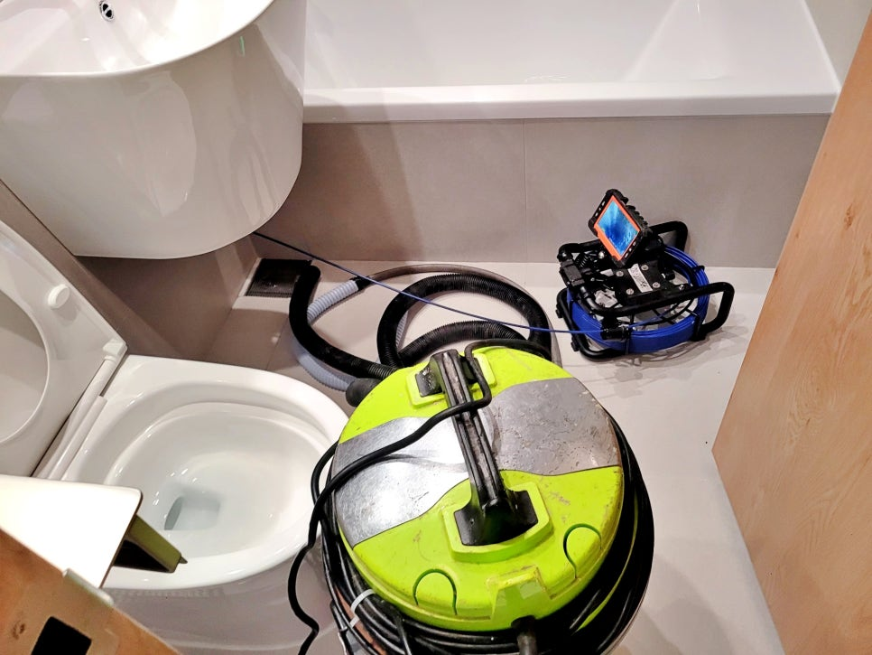
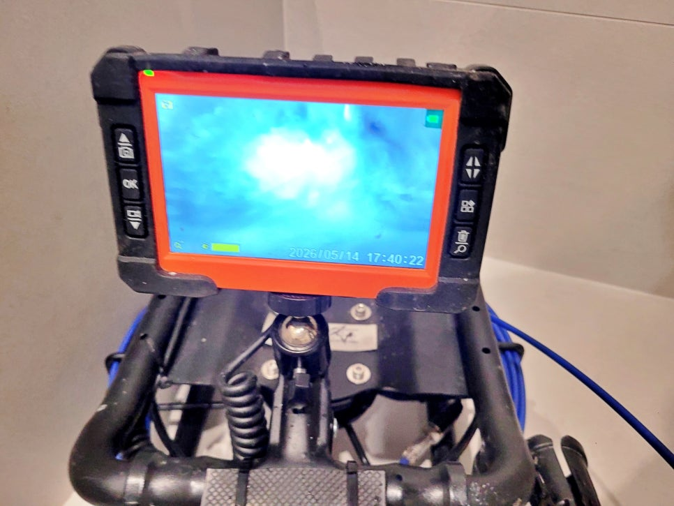
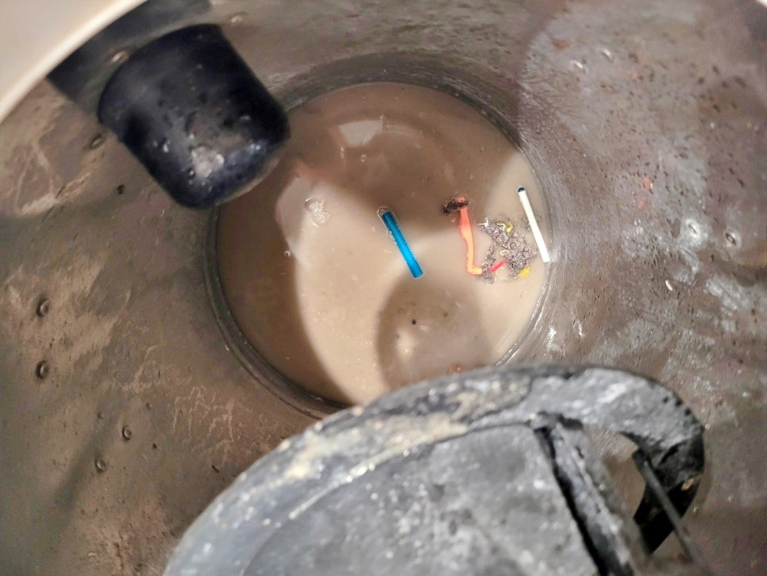
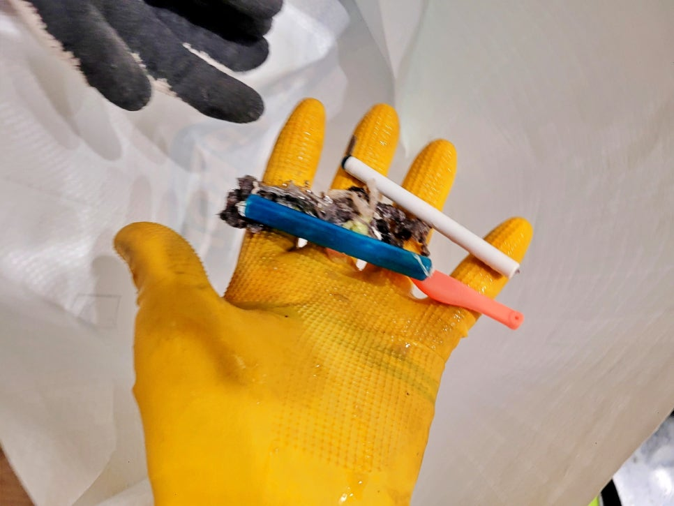
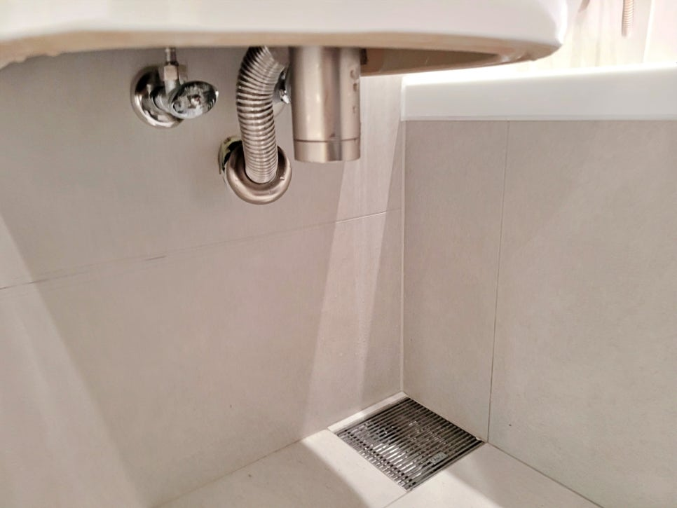
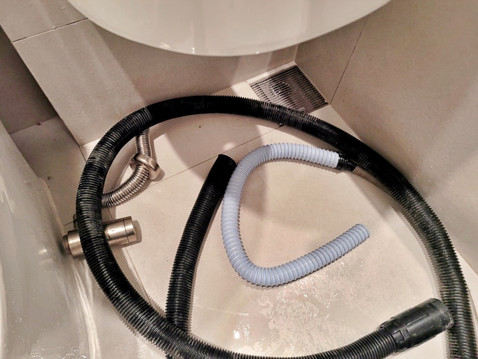

🏠 화성 봉담 욕실 하수구막힘, 리모델링 후 배수구역류 해결
화성 봉담 하수구막힘 전문 시공 후기

📋 작업 개요
- 위치: 화성 봉담, 봉담, 화성
- 서비스 유형: 하수구막힘, 배관막힘, 역류해결, 배관청소, 설비공사
- 작업 일시: 2026. 5. 25. 14:45
- 업체명: 하수구수사대 (010-5615-2118)
🔍 문제 상황
화성 봉담 욕실하수구막힘 역류,
리모델링 후 배수구역류 원인은
이물질 유입
안녕하세요.
화성 봉담 욕실 하수구막힘
배관청소 전문 하수구수사대입니다.
이번 현장은 화성 봉담 아파트
리모델링 후 입주한 세대입니다.
입주 후 욕실을 사용해 보니
세면대 물이 시원하게 빠지지 않고,
바닥 배수구 쪽도 흐름이 답답하다는
연락을 받고 방문했는데요.
화성 봉담 욕실 하수구막힘 현장
리모델링이 끝난 현장이라고 해도
공사 과정에서 나온 작은 자재 조각이나
실리콘, 먼지, 절단된 배관 조각 등이
배수 라인 안쪽으로 들어가는 경우가
생각보다 많습니다.
화성 봉담 욕실 하수구막힘 원인
욕실 하수구 내부 상태를 점검하는 모습

🔎 원인 분석
💡 전문가 진단: 화성 봉담 욕실하수구막힘 역류,리모델링 후 배수구역류 원인은이물질 유입
먼저 욕실 바닥 배수구 안쪽을
내시경 장비로 살펴봤습니다.
겉으로 보기에는 깨끗해 보여도
배관 내부에는 이물질이 고여 있었고,
역류 원인이 보였습니다.
석션장비로 제거한 이물질
석션 장비를 이용해 내부에 있던
이물질을 흡입해 보니 배관 안쪽에서
생활용품 조각과 머리카락이 함께
나왔는데요. 이런 경우 단순히 물만
흘려보내서는 해결되기 어렵습니다.
화성 봉담 욕실 바닥 하수구역류 현장은
배수구 청소 작업 후에도
세면대 배수 상태까지 함께 살펴봤는데요.
세면대 역시 물 빠짐이 느린 상태라
트랩을 분리한 뒤 배관 안쪽을
석션 장비로 먼저 청소했습니다.
세면대 트랩 철거 후 배관 청소 중
트랩을 분리하고 보니 내부에 남아 있던
머리카락과 이물질이 배수 흐름을
방해하고 있었는데요. 이후 샤프트 장비를

🔧 작업 과정
사용해 배관 안쪽에 붙어 있던 잔여물을
제거했습니다.
참고로 욕실 배관은 한 곳만 막혀도
세면대, 바닥 배수구, 샤워 공간 사용에
불편이 이어질 수 있습니다.
그래서 이번 현장도 바닥 트랩과
세면대 배관과 구분하지 않고
전체 흐름을 같이 점검했습니다.
화성 봉담 욕실 배수구역류 청소 작업이
끝난 뒤에는 트랩을 다시 설치하고
세면대에 물을 충분히 틀어
배수 테스트를 진행했는데요.
세면대 트랩 재설치 후 배수 테스트 진행하는 모습
물이 고이지 않고 바로 빠지는 모습이
나타나면서 막힘이 해소된 상태를
볼 수 있었습니다.
바닥 배수구 쪽에도 물을 흘려보내
배수 흐름을 다시 살펴봤습니다.
작업 전과 달리 물이 정체되지 않고
시원하게 내려갔고, 역류 증상 없이
정상 배수되는 상태였습니다.
화성 욕실 하수구막힘 청소 후기를 마무리하며
배수 테스트 과정 내시경 카메라로 확인하는 모습
이번 화성 봉담 욕실 하수구막힘 현장은
리모델링 후 남은 이물질이 배관 안쪽에
유입되면서 발생한 사례였는데요.
입주 전후로 배수가 느리다면 단순 사용
문제로 넘기지 말고 배관 내부 상태를
살펴보는 것이 좋습니다.
특히 욕실 바닥 트랩에는 거름망을
설치해 머리카락이나 작은 이물질이
배관 안으로 들어가지 않도록 관리하는
것이 중요합니다.


✅ 작업 완료
하수구수사대는 현장 상태에 맞춰
내시경 점검, 석션, 샤프트 작업 등
불필요한 작업 없이 생활 배수 문제를
정확하게 해결해드리고 있습니다.
이상으로
화성 봉담 욕실 하수구막힘과 배수구역류
해결 후기를 마치겠습니다.
끝까지 읽어주셔서 감사합니다.
#화성봉담욕실하수구막힘 #화성봉담하수구막힘 #봉담세면대막힘 #화성욕실배수구막힘 #화성세면대배수막힘 #리모델링후하수구막힘 #하수구수사대 #화성배관청소업체 #화성봉담하수구청소업체




⚠️ 하수구 배관 막힘 예방 및 관리 가이드
- ✅ 머리카락, 비닐, 물티슈 등 물에 분해되지 않는 이물질은 하수구 유입을 절대 금지해 주세요.
- ✅ 하수구 거름망을 씌우고 모여진 이물질은 주기적으로 쓰레기통에 바로 비워주셔야 합니다.
- ✅ 배관 노후가 심할 경우 이물질이 더 쉽게 걸리므로 주기적인 배관 세척(고압세척 등)을 권장합니다.
- ✅ 작업 후 1년 이내 재발 시 하수구수사대에서 무상 A/S 보증 서비스를 제공합니다.
💡 핵심 정리
- 확실한 장비 작업(내시경 점검 및 샤프트 스케일링)으로 원인을 뿌리 뽑습니다.
- 작업 후 1년 이내에 동일한 부위 재발 시 100% 무상 A/S 서비스를 보장합니다.
- 서울 · 경기 · 인천 전 지역에 24시간 언제든 긴급 출동할 수 있도록 항시 대기 중입니다.
❓ 자주 묻는 질문 (FAQ)
🚨 화성 봉담 하수구막힘 문제로 고민이신가요?
정확한 원인 진단과 확실한 시공으로 재발 없는 해결을 약속드립니다.
24시간 긴급 출동 | 서울 · 경기 · 인천 전지역 | 1년 내 재발 시 무상 A/S